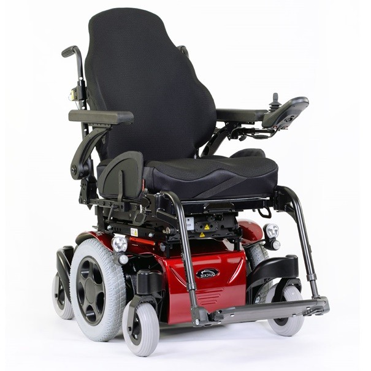

Le fauteuil CAPESH

Le fauteuil CAPESH est une véritable révolution dans le domaine de la mobilité :
équipé d’une Intelligence Artificielle conçu par nos soins le rendant conscient de son environnement
bien mieux qu’un être humain, elle aide l’utilisateur à se déplacer sans danger en évitant toute menace que
peuvent être les piétons, les véhicules, les animaux…
D’une autre part, il a été pensé pour pouvoir franchir des obstacles tels que des marches, des trottoirs
ou des pentes, à la fois en montée ou bien en descente.
Grâce à son tableau de bord situé sur l’accoudoir gauche, l’utilisateur obtient en permanence toutes les
informations récoltées en temps réels ce qui lui permet d’agir en fonction car bien qu’une fonctionnalité
intégrée permet un mode « pilote automatique » l’utilisateur reste le maitre du dispositif et garde la priorité sur les actions du siège.
Compatible avec de nombreuses applications mobiles, la tablette située sur le tableau de bord vous donne
l’opportunité de consulter la météo, un GPS, votre musique, vos messages etc. afin de faciliter l’accès à vos appareils.
La livraison de ce service est de 2 semaines
Ce produit est a un prix de 5000 euros